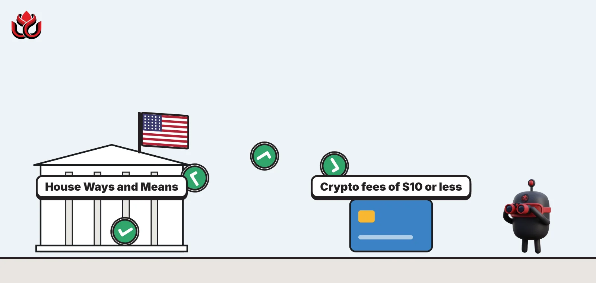
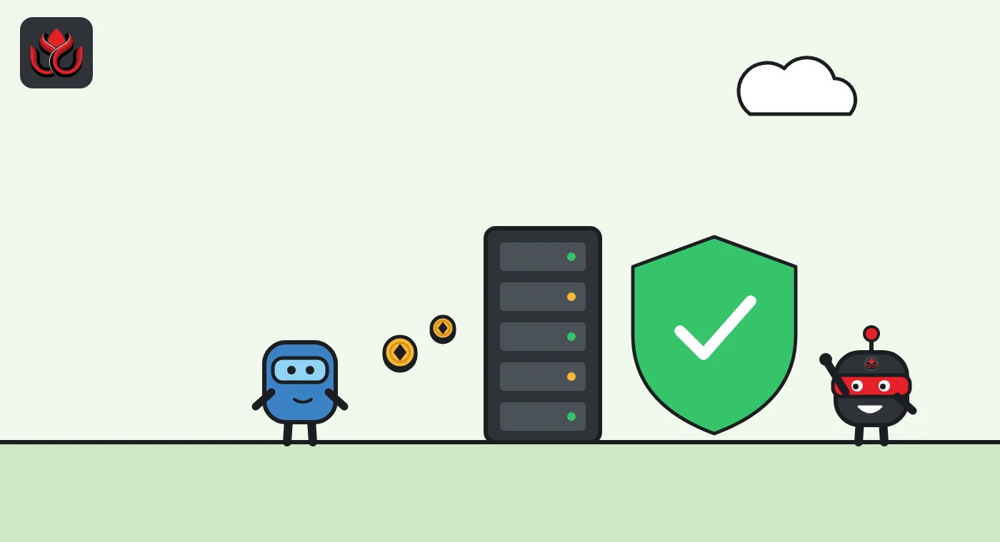
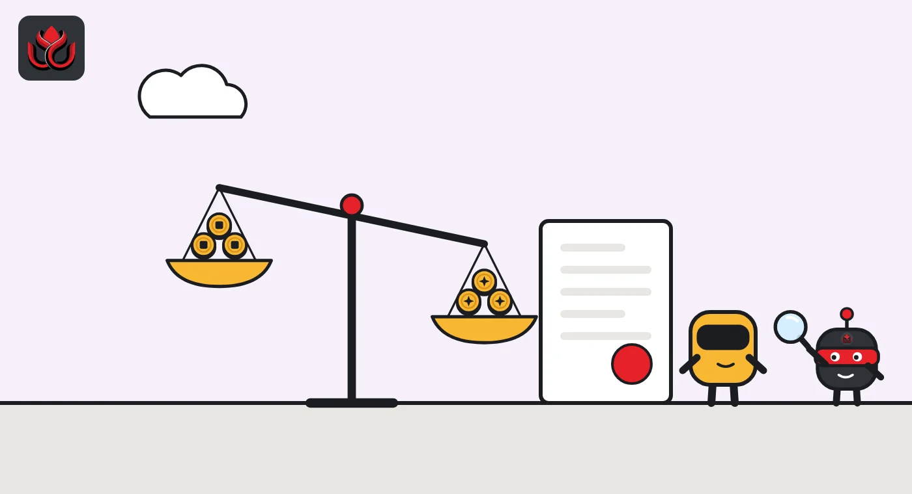

Crypto fees of $10 or less could go tax-free as House panel backs bill 38 to 5
The Digital Asset Tax Certainty Act would end tax on small network fees, simplify the tax on dollar stablecoins and bring wash-sale rules to crypto. Congress's own scorekeeper says it raises about $1.5 billion over seven years.

Key points
- A House committee voted 38 to 5 on September 16, 2026, for the first US bill on how crypto is taxed.
- Paying network fees of $10 or less in crypto would stop counting as a taxable sale, though traders, dealers and heavy users are excluded.
- Wash-sale rules would apply to crypto, ending a loss-harvesting trick, and Congress's tax scorekeeper says the bill raises a net $1.537 billion from 2027 to 2033.
The vote
A US House committee voted 38 to 5 on September 16, 2026, to advance the first federal bill on how crypto is taxed. The House Ways and Means Committee, which writes US tax law, approved the Digital Asset Tax Certainty Act (H.R. 10357) after it first adopted a substitute text offered by Chairman Jason Smith by voice vote, then ordered the bill reported to the House by a roll call of 38 to 5, the committee's markup record shows. The five no votes came from Democrats Lloyd Doggett, Judy Chu, Gwen Moore, Don Beyer and Dwight Evans, according to the recorded vote. Other Democrats, including Ranking Member Richard Neal, voted yes.
Smith said the bill sets up the first tax framework for digital assets, with the aim of "bringing clarity, parity, and workability to digital asset taxation". The committee says it would be the first federal law on the substantive tax treatment of crypto.
What changes for ordinary users
Today, spending crypto, even to pay a tiny network fee, can count as a sale that must be reported. The committee said the IRS received hundreds of millions of 1099-DA forms in 2025, many for transactions under $10. The bill targets that problem. The details below come from the Joint Committee on Taxation (JCT) description of the bill as introduced. The committee approved an amended version, so some details may have changed.
- Small fees: no gain or loss when crypto is used to pay network or transaction fees of $10 or less. Traders, brokers, dealers, people who batch or facilitate validation, and anyone with more than 5,000 crypto transactions in the prior year are excluded, though the Treasury could waive some exclusions. It applies to dispositions after December 31, 2027.
- Dollar stablecoins: for qualified US dollar stablecoins, ordinary use generally creates no gain or loss. Thresholds of 99.5% (when buying) and 100.5% (when selling) of the redemption value set when that treatment applies. This starts with tax years after December 31, 2026.
- Simpler accounting: holders of widely traded assets (market capitalization above $500 million, adjusted for inflation) could elect to recognize gains and losses once a year instead of trade by trade.
- Gifts to charity: stablecoins and widely traded assets would no longer need a qualified appraisal.
- Clean slate: the Treasury would set up a voluntary disclosure program for digital assets with reduced penalties, the committee said.

What gets tougher
The bill also closes gaps that critics say favor crypto over stocks. The wash-sale rule, which stops investors from selling at a loss and buying back within 30 days just to claim a tax loss, would apply to traded digital assets. The constructive sale rule, which taxes investors who lock in a gain with an offsetting position, would apply too, along with other anti-abuse rules covering derivatives, US territories and foreign corporations. The bill also clarifies the tax treatment of mining and staking, the committee said.
The bill carries one unrelated item: Representative Miller's fix for gambling losses. It restores the full deduction for gambling losses, up to the amount of winnings, after last year's tax law cut it to 90%, Smith said.
The fine print for traders and funds
Several provisions aim to give crypto the same tax treatment as stocks and bonds, according to the JCT description:
- Lending: lending traded digital assets would get the same tax-free treatment that securities lending gets today under section 1058 of the tax code, for transfers after the law is enacted.
- Mark-to-market: traders and dealers could choose to value their crypto at market prices each year without asking the IRS for consent, and spread the one-time adjustment over four years.
- Foreign investors: foreign persons trading crypto through an independent agent, or for their own account if they are not dealers, generally would not be treated as running a US business. This safe harbor mirrors rules for stocks.
- Once-a-year election: the option for widely traded assets is limited to holders who own no more than 10% of the asset. It continues until revoked, revocation is restricted for five years, and gains and losses under it are short term.
- Charity workaround: deductions for gifts of most other digital assets would be disallowed, but no gain would be taxed if the sale proceeds are donated within seven days or by year-end, whichever comes first.

What it raises and what it costs
The JCT's preliminary score shows the bill raising a net $1.537 billion between 2027 and 2033. The new crypto rules for dealers and traders and the wash-sale rule bring in the most money. The small-fee exemption and the restored gambling loss deduction cost the most, according to the JCT estimate. The yearly net effect peaks at $563 million in 2028 and turns negative in 2032 and 2033, at minus $135 million and minus $168 million.
Largest items in the JCT score, 2027 to 2033
US$ million
Source: Joint Committee on Taxation, estimated revenue effects of H.R. 10357
What was voted down, and what comes next
No amendments were adopted apart from the chairman's substitute. Two amendments filed by Representative Doggett were defeated, 12 to 28 and 16 to 25, according to the markup record. The record does not describe what the amendments would have done.
The bill now goes to the full House. It would also need to pass the Senate before it could become law.
LC Insight analysis
This section is our reading of the facts above, not a statement of fact.
- The $10 fee rule matters more for crypto payments than any headline number. Without it, every small onchain payment is a tax event, which makes paying with stablecoins or crypto a chore.
- The bill is a trade: easier rules for small users and stablecoins in return for wash-sale and anti-abuse rules that end strategies active traders use today. Loss harvesters should expect higher tax bills if it becomes law.
- The hard part is the floor calendar, not the committee. A wide bipartisan vote helps, but the Senate has its own crypto agenda and the bill still needs a path there.
What's next
- Whether House leaders schedule a floor vote on H.R. 10357
- A Senate companion bill or any Senate Finance Committee action
- IRS reaction on how the stablecoin and fee rules would be reported
Disclaimer. This article is based on public information and the sources listed below as of the update time shown. It is for information only and is not investment, legal or tax advice. Figures may change as companies and authorities publish new data.
Sources
- Ways and Means, Markup of H.R. 10357 and other bills, record and votes (September 16, 2026)
- Ways and Means, Recorded vote on final passage of H.R. 10357 (September 16, 2026)
- Ways and Means, Historic Digital Asset Tax Legislation Advances (September 16, 2026)
- Ways and Means, Chairman Smith opening statement (September 16, 2026)
- Joint Committee on Taxation, Description of H.R. 10357
- Joint Committee on Taxation, Estimated revenue effects of H.R. 10357